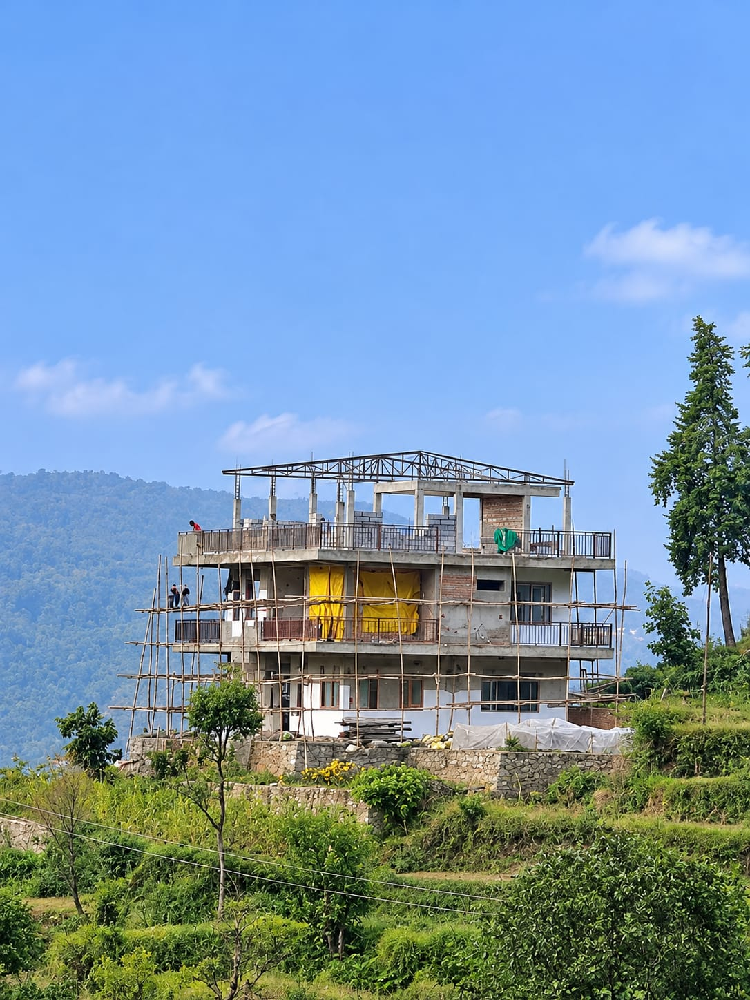
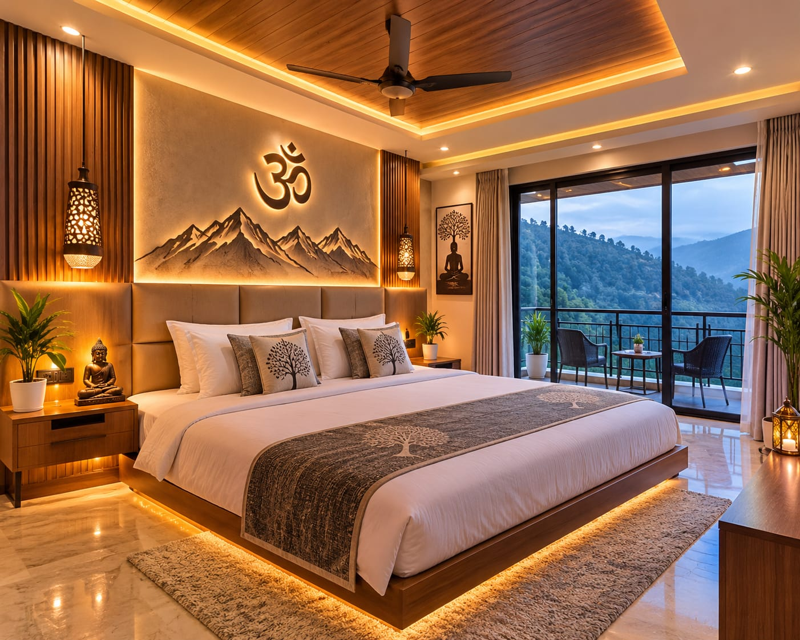
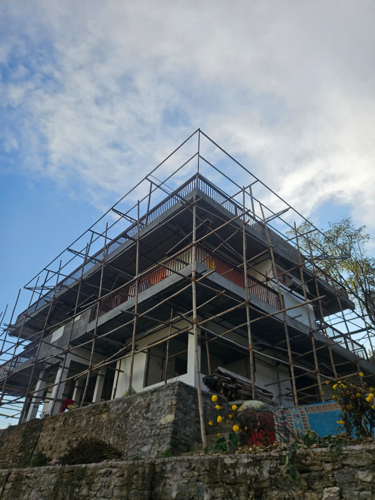
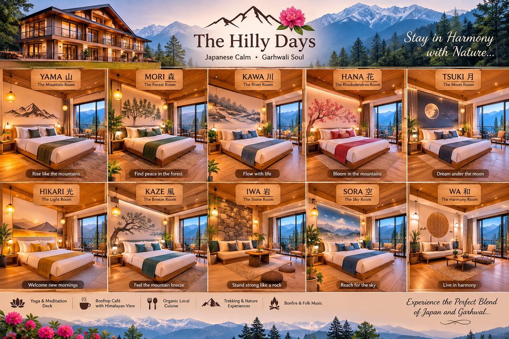
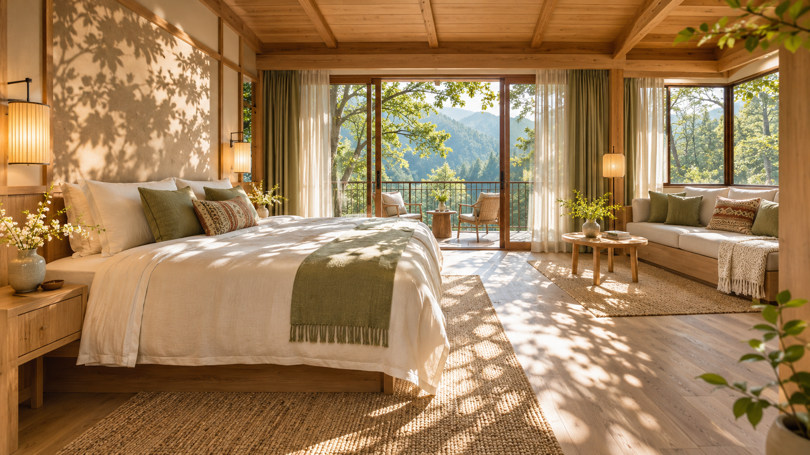
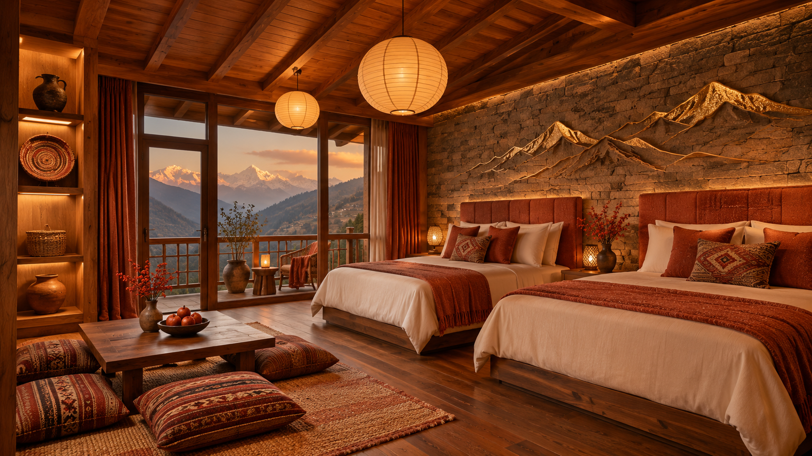
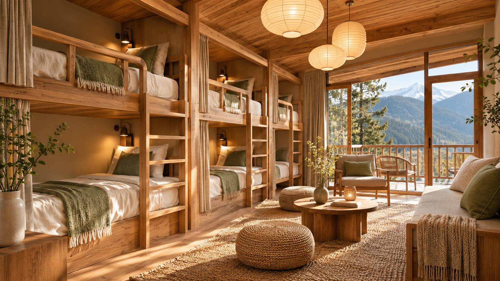

Calm in the details.
Simple lines, timber textures, soft lighting, and nature-inspired names give each planned room its own quiet character.
A NEW MOUNTAIN HIDEAWAY IS TAKING SHAPE
Somewhere between the clouds and the everyday.
Your own little edge of the Himalayas.

OUR LITTLE CORNER OF THE MOUNTAINS
THE ROOM MOOD · DESIGN INSPIRATION
FIELD NOTES / THE RIDGE, IN THE MAKINGWELCOME TO YOUR OTHER KIND OF HIGH
At the edge of a mountain in the Tungnath Valley, we're creating a place that feels a little closer to everything that matters.
A river winding below. A waterfall in the distance. A glimpse of Tungnath. And mountain views that wrap around you, all 270 degrees of them.
Just a 200-metre walk from the road, the noise falls away.
Meet the slow life ↗MOUNTAINS ALL AROUND
A WALK INTO SOLITUDE
WAYS TO DO NOTHING
TWO INFLUENCES. ONE MOUNTAIN HOME.
Our setting is Himalayan. Our room names and design direction look to Japan. At the Ridge, those influences meet through natural materials, warm light, and a shared love of being close to nature.
Mountain, forest, light. The names may be Japanese, but their inspiration feels at home here in the Tungnath Valley.
A room collection imagined in warm wood, linen, earthy colours, and thoughtful local touches.
Simple lines, timber textures, soft lighting, and nature-inspired names give each planned room its own quiet character.
The valley, wooded hillsides, mountain light, and stories of local life shape the feeling of the Ridge. Local craft touches are part of the design direction.
Japanese-inspired interiors open towards a Himalayan setting. The connection runs through the rooms, their palettes, and the landscapes behind their names.
JAPANESE CALM. GARHWALI SOUL.
Every room has its own nature-inspired theme. Discover couple rooms, family suites, and a shared dormitory, each with a distinct palette and personality.
THE JAPAN–GARHWAL ROOM COLLECTIONJapanese names give each room its nature-inspired identity. The Pahadi connection comes from the mountains, forests, light, and journeys of our Himalayan setting. Natural materials and planned local craft touches bring those influences together.
Prices, room-by-room views, balcony assignments, beds, and capacities below are illustrative placeholders for this website layout. They will be replaced with confirmed details before bookings open. Room names and concepts describe our planned direction.

INTERIOR CONCEPTA grounding space in earthy greens, warm wood, and natural textures.
PREVIEW OUTLOOKWooded hillside and valley outlook
Mori means forest in Japanese. The connection here is to the wooded mountain landscape: greens, bark-like textures, and the stillness of a walk among trees.
A quiet forest retreat, expressed through earthy greens, warm timber, and softly textured fabrics.
Earthy greens, timber, woven textures
A quiet base for couples who enjoy natural textures and a greener outlook.
Illustrative room assignment for this preview. Exact outlook, bed configuration, and capacity will be confirmed before booking.
₹4,000 per room / night. An illustrative layout rate, not a bookable offer. Meal plans and tax treatment are not yet specified; confirm the final total before booking.
Blush tones, delicate floral art, and light wood for a softer mountain escape.
PREVIEW OUTLOOKValley and waterfall glimpse
Sakura means cherry blossom in Japanese. Its floral mood is paired with the colour and softness of mountain blossoms; it is a design connection, rather than a local-language translation.
A gentle, romantic room with blush colours, floral details, and pale wood.
Blush pink, floral artwork, light wood
Soft floral details and an intimate setting for an unhurried escape together.
Illustrative room assignment for this preview. Exact outlook, bed configuration, and capacity will be confirmed before booking.
₹4,500 per room / night. An illustrative layout rate, not a bookable offer. Meal plans and tax treatment are not yet specified; confirm the final total before booking.
Open, fresh, and uplifting, with sky blues, soft whites, and natural oak.
PREVIEW OUTLOOKOpen valley and distant mountain ridges
Sora means sky in Japanese. The Pahadi connection is the wide mountain sky: changing clouds, clear light, and a sense of openness reflected in the palette.
An open, airy room in sky blues, warm whites, and natural oak.
Sky blue, warm white, natural oak
An airy mood for travellers drawn to sky, space, and long balcony mornings.
Illustrative room assignment for this preview. Exact outlook, bed configuration, and capacity will be confirmed before booking.
₹4,500 per room / night. An illustrative layout rate, not a bookable offer. Meal plans and tax treatment are not yet specified; confirm the final total before booking.
A warm, radiant room with golden hues, linen, and honey-toned wood.
PREVIEW OUTLOOKSunrise-facing mountain outlook
Hikari means light in Japanese. The local inspiration is the changing Himalayan light, from the first glow of morning to the warm colours of evening. This theme does not imply a particular sunrise or sunset view.
A welcoming, golden room shaped around warm lighting, honey-toned wood, and linen.
Golden tones, linen, warm lighting
Golden tones and a bright morning mood for early risers and slow starts.
Illustrative room assignment for this preview. Exact outlook, bed configuration, and capacity will be confirmed before booking.
₹4,800 per room / night. An illustrative layout rate, not a bookable offer. Meal plans and tax treatment are not yet specified; confirm the final total before booking.
A calm, intimate mood in deep blues, soft greys, and warm ambient light.
PREVIEW OUTLOOKValley outlook and evening sky
Tsuki means moon in Japanese. Its mountain connection is the quiet of a Pahadi night, translated into a restful palette and a softer lighting mood.
An intimate room with deep blues, soft greys, and gentle pools of warm light.
Indigo, soft grey, ambient lighting
A softer, restful room for quiet evenings after a day in the mountains.
Illustrative room assignment for this preview. Exact outlook, bed configuration, and capacity will be confirmed before booking.
₹4,500 per room / night. An illustrative layout rate, not a bookable offer. Meal plans and tax treatment are not yet specified; confirm the final total before booking.
An earthy retreat inspired by Himalayan peaks, stone, wood, and mossy greens.
PREVIEW OUTLOOKTungnath glimpse and layered mountain ridges
Yama means mountain in Japanese. The link to the Ridge is direct: the mountains of Tungnath Valley inspire its shapes, grounded colours, and textured materials.
An earthy room inspired by Himalayan ridgelines, mossy greens, stone, and natural wood.
Moss green, stone tones, mountain artwork
A grounded mountain theme for guests who want the peaks at the centre of their stay.
Illustrative room assignment for this preview. Exact outlook, bed configuration, and capacity will be confirmed before booking.
₹5,000 per room / night. An illustrative layout rate, not a bookable offer. Meal plans and tax treatment are not yet specified; confirm the final total before booking.

AI-GENERATED INTERIOR CONCEPTA family suite imagined around warm natural light, wooden textures, and a connection to the outdoors.
PREVIEW OUTLOOKWooded hillside, river, and valley glimpses
Komorebi describes sunlight filtering through trees in Japanese. Its Pahadi connection is the play of light through a mountain woodland, interpreted through layered light and natural textures.
A family suite with warm natural tones, wood textures, and a relaxed, connected feel.
Dappled-light inspiration, warm wood, soft neutrals
A relaxed family base for shared mornings, conversation, and time outdoors.
Illustrative room assignment for this preview. Exact outlook, bed configuration, and capacity will be confirmed before booking.
₹5,000 per room / night. An illustrative layout rate, not a bookable offer. Meal plans and tax treatment are not yet specified; confirm the final total before booking.

AI-GENERATED INTERIOR CONCEPTA family space with rich earthy tones, warm layers, and thoughtfully chosen details.
PREVIEW OUTLOOKSunset-facing valley and mountain outlook
Takara means treasure in Japanese. Here, the connection is to the things a mountain stay lets a family treasure: time together, shared meals, and memories of the valley.
A family suite with rich earthy colours, warm layers, and carefully chosen details.
Terracotta, warm oak, considered details
Warm, layered interiors for families or a small group travelling together.
Illustrative room assignment for this preview. Exact outlook, bed configuration, and capacity will be confirmed before booking.
₹5,000 per room / night. An illustrative layout rate, not a bookable offer. Meal plans and tax treatment are not yet specified; confirm the final total before booking.

AI-GENERATED INTERIOR CONCEPTA social base for explorers, with a planned Japanese-inspired look, natural wood, and welcoming shared spaces.
PREVIEW OUTLOOKMountain and valley outlook
Tabi means journey or travel in Japanese. Its Pahadi connection is the experience of walking mountain trails, meeting fellow travellers, and returning to a shared base after a day out.
A welcoming shared dormitory with a planned Japanese-inspired look, natural timber, and a social spirit.
Natural wood, sage accents, shared-space design
A sociable stay for solo travellers, trekking companions, and friends on a mountain journey.
Illustrative room assignment for this preview. Exact outlook, bed configuration, and capacity will be confirmed before booking.
₹1,000 per person / night. An illustrative layout rate, not a bookable offer. Meal plans and tax treatment are not yet specified; confirm the final total before booking.
Room names, palettes, and images describe the planned design direction. Displayed rates and room specifications are sample details, not confirmed booking terms. Images are interior references, including AI-generated family-suite and Tabi concepts, not photographs of completed rooms at the Ridge. Final layouts and finishes may evolve.
THOUGHTFUL LITTLE COMFORTS
Simple comforts that make it easier
to settle in, switch off, and stay a while.
Stay connected when you need to.
A warm refresh after mountain days.
Private bathroom facilities for the couple and family rooms.
Backup power for interruptions.
Leave your vehicle near the road; the last 200 metres are on foot.
A little extra ease during your stay.
For a slow start or an afternoon pause.
Settle in and watch the mountain light change.
Kitchen garden & fresh live kitchen · Recreation space · Food & pick-up / drop arrangements
NO ITINERARY REQUIRED
Make room for the little things.
They feel a whole lot bigger up here.
A sunrise over the mountains. A slow start on your fully equipped balcony. A whole day ahead with nowhere you need to rush.
Save me a mountain morning ↗A kitchen garden and fresh live kitchen. Food that follows a fresher rhythm.
Balcony time, mountain light, and a horizon that never gets old.
Open space for recreation, good company, and wonderfully unplanned days.
THE NEXT CHAPTER
We're dreaming up a few more reasons
to put your phone down and stay longer.
Open-air projector nights, with the Tungnath Valley behind the screen and a sky full of stars above. Planned for a future chapter.
A small museum to celebrate local culture, folk traditions, and the everyday treasures that carry a mountain's memories.
A LITTLE HERITAGE. A LOT OF HEART. ↗UNFILTERED. UNFINISHED. FULL OF POSSIBILITY.
Real glimpses from our mountainside.
Follow the building of the Ridge, and
the inspiration for what comes next.
A short video from the folder. See the place as it takes shape.
JUST A LITTLE FURTHER OUT
A base for the days you want to wander.
A hideaway for the days you don't.
Open meadows, mountain air, and a slower pace.
A mountain trek with a meaningful destination.
A quiet lake and a beautiful reason to head out.
Ask about food and pick-up & drop arrangements.The final 200 metres are on foot. Please discuss access needs before planning your stay.
↗YOUR LITTLE PIN IN THE HIMALAYAS
the Ridge, Tungnath Valley, Uttarakhand.
Follow the pin to our mountainside. The resort is a 200-metre walk from the road; please discuss the approach, access needs, and pick-up & drop arrangements before travelling.
Get directions ↗Open our exact pin in Google Maps ↗30.508829422817914 N · 79.13545488483066 EThe pin marks the resort, not a confirmed road-side drop-off point. Check the final approach with us before setting out.
YOUR MOUNTAIN MOMENT STARTS HERE
Dreaming of a quiet escape or an adventure with your people? Put together your stay wish list.
Opening updates will be added soon.For stay enquiries, food, and pick-up & drop arrangements.